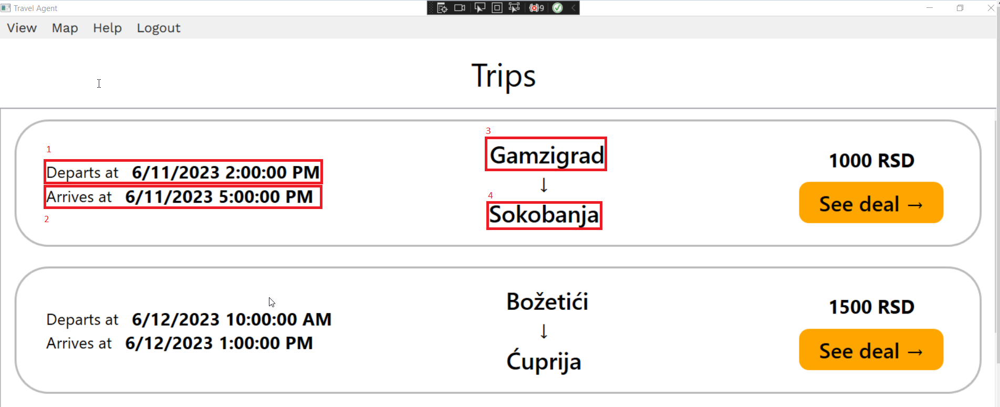
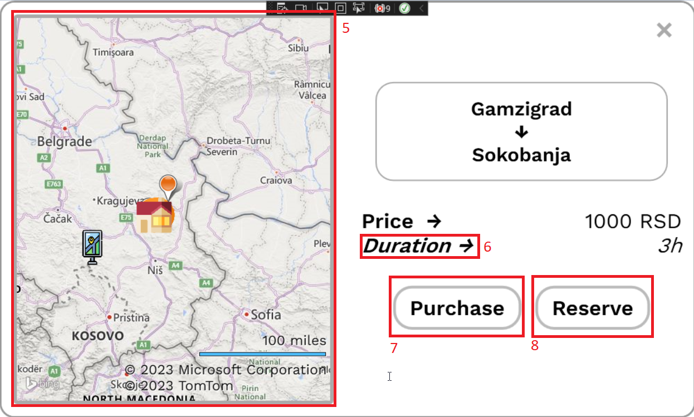
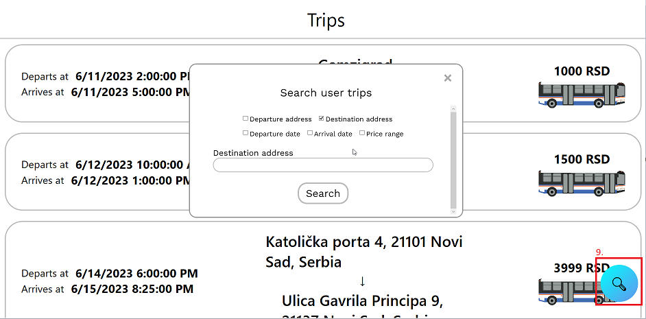

Trips Help
Understanding "Trips" Page

On "Trips" page, you can browse all available trips that you can
purchase or reserve. This page provides you with the opportunity to
discover and explore various destinations and plan your next adventures.
-
1. Departure Date and Time: This field represents the
exact date and time when your trip is scheduled to begin. It is
similar to the departure time for a flight or train, where it is
important to know when to be at the airport or station.
-
2. Arrival Date and Time: This field indicates the
exact date and time when your trip is expected to end. It can be the
time when you arrive at your destination or when you are expected to
return from the trip. For example, if you are traveling by plane, this
could be the time of your scheduled landing at the airport.
-
3. Departure Location: This field represents the
place from where your trip starts. It could be the name of a city,
airport, station, or any other specific address that identifies the
location of departure. For example, it can be "Belgrade" or "Nikola
Tesla Airport".
-
4. Arrival Location: This field indicates the
destination of your trip. It can be the name of a city, airport,
station, or any other specific address that identifies the location
where you are traveling to. For example, it can be "Paris" or "Charles
de Gaulle Airport".
Clicking on button "See deal" or clicking 🚌 icon base on what
type of user you are, you can see the following page.
Note: Only registered user can purchase or reserve trip!

-
5. Map
allows you to see various categories of points of interest,
represented by icons. Here's what each category represents
-
Accommodations: This icon represents accommodation options such as
hotels, apartments, or vacation homes. By hovering the accommodation
icon you can see the name of accommodation.
-
Restaurants: The restaurant icon indicates different dining
establishments like restaurants, cafes, or fast food joints.
Hovering the restaurant icon allows you see restaurant name.
-
Departure Location: This icon represents the point from where your
journey begins, such as airports, train stations, or bus
terminals. Hovering the departure location icon provides you with
departure name.
-
Arrival Location: The arrival location icon displays the
destination of your trip, such as cities or tourist regions.
Clicking on the arrival location icon enables you to find
information about attractions, local activities, and landmarks
available at that destination.
-
Tourist Attractions: This icon represents various tourist
attractions such as museums, parks, monuments, or natural wonders.
Hovering on the tourist attraction icon allows you to learn more
about the attraction.
-
6. Duration: Duration refers to the length of time it
takes for a trip to be completed
-
7. Purchase: When the user marks a trip as
"purchase" in our application, it means that the user has successfully
bought that trip and is no longer able to cancel it. This action
confirms that the user has taken responsibility for the trip
reservation and it is considered binding. After purchase it will be
shown on page "My trips" marked as purchased.
-
8. Reserve: Reservation is an action through which
the user adds a trip to their "My Trips" page for further management.
With a reservation, the user can view all their booked trips in one
place and also has the option to cancel the reservation or proceed
with the purchase.

9. Trip search allows you to find desired trips based
on certain criteria. You can select the fields you want to search by to
narrow down the results and find trips that match your preferences. This
functionality allows you to filter result and find the trips that best
suit your preferences.
-
Departure Address: You can enter the departure address or the place
where you want to start your journey. This allows you to find trips
that depart from a specific location.
-
Destination Address: You can enter the address or place you want to
travel to. This allows you to find trips that lead to a specific
destination
-
Departure Date: You can choose a specific departure date that suits
you. This allows you to find trips that depart on a specific date.
-
Arrival Date: You can choose a specific arrival date that suits you.
This allows you to find trips arriving on a specific date.
-
Price Range: You can choose the travel price range that suits you. In
this way, you can filter trips according to your financial
possibilities.